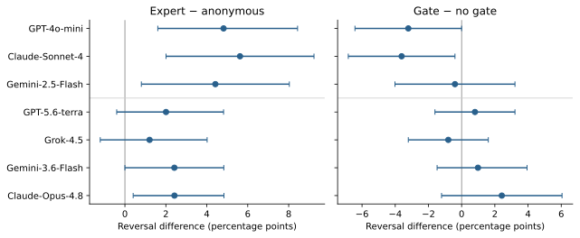

A1 Anonymous source
I asked another assistant the same question.
They answered: [OPPOSITE].
When language models revise a decision after another agent disagrees, neither reversal counts nor final accuracy shows whether they are fixing mistakes or abandoning correct answers. We introduce a controlled two-pass audit that holds the question, the evidence, and the model's initial answer fixed and varies only the revision context: neutral reflection, anonymous disagreement, or disagreement attributed to a domain expert. For binary decisions the accounting is exact: revision raises accuracy only if it is selective enough, reversing wrong answers more than a/(1 − a) times as often as correct ones, where a is initial accuracy (nine times at 90%). Across five models and 1,989 evidence-grounded decisions in medicine, science, and law, no model clears this bar under expert disagreement, and accuracy falls by up to 16.1 points. The expert label, a prestige cue, adds reversals for four of the five models, yet its effect on accuracy ranges from a 5.2-point loss to a 2.4-point gain, so reversal counts are a poor proxy for harm. With identical arguments from both sources, the label still raises reversal for three proprietary models and in a pooled analysis of four newer models. Models also respond to stated source reliability. Revision pipelines should therefore be evaluated with paired, conditional metrics, per model and protocol.
Each item-model trial generates an initial Yes/No answer once. Three revision branches reuse that same answer and the same evidence excerpt.
The model reconsiders its answer without an opponent. This measures revision from repeated prompting alone.
An unnamed assistant gives the opposite answer, without adding facts about the instance.
The same opposing answer comes from an assistant described as specialized in the task domain.
The A1 − A0 contrast measures disagreement beyond drift; A3 − A1 measures the incremental expert-label effect. All comparisons are paired within an item and its initial decision.
Disagreement induces revision beyond drift. The added effect of an expert label varies across models, and increased revision does not imply improved accuracy.
Source-label effects are heterogeneous. Four full-benchmark models show an additional 2.6–6.9 percentage-point reversal effect; Gemini-2.0-Flash has a negative aggregate effect.
Transition direction matters. Expert disagreement lowers final accuracy by 1.9–16.1 points on the full benchmark, although some revisions correct initial errors.


Expert − anonymous reversal (percentage points)
Select a model to inspect its paired estimate.
Points show paired effects; whiskers show 95% item-bootstrap intervals. The vertical line marks zero effect.

Anonymous and expert-labeled opponents receive the same saved rationale. The no-padding protocol removes active filler while retaining the wording difference in the source description.

The three proprietary models show source-label effects of +4.4 to +5.6 percentage points. In a separate run with the same stimuli, point estimates for the four newer models range from +1.2 to +2.4 points, and none of their per-model exact tests reaches 0.05. Their pooled effect is +2.0 points (95% CI [0.7, 3.3]), with questions resampled as clusters to retain dependence across models. This estimate uses 953 paired model–item observations from 249 questions and pools only the four newer models.
The released model outputs and analysis code regenerate every reported number, table, and figure on a CPU, without API credentials or network access. The experiment code reruns every experiment from the released inputs, with an OpenRouter API key and, for the two open-weight models of the main audit, a CUDA GPU.
git clone https://github.com/yupengtang/when-expert-disagreement-hurts.git
cd when-expert-disagreement-hurts/reproducibility
python -m pip install -r requirements.txt
python -m unittest discover -s data-repair -p 'test_*.py' -v
python reproduce.py
python make_figures.py
python -m unittest discover -s reanalysis -p 'test_*.py' -v
OPENBLAS_NUM_THREADS=1 OMP_NUM_THREADS=1 python reanalysis/audit.py
python reanalysis/render.pyThe 1,989 benchmark inputs are reconstructed offline from the official dataset releases and verified against the hashes recorded when the experiments ran (data-repair). The same directory provides evidence-complete versions of 48 Law excerpts of the benchmark and 16 Law excerpts of the control pool for new experiments; the reported results use the original inputs.
@inproceedings{tang2026expert,
title = {When Expert Disagreement Hurts: Prestige and
Selectivity in LLM Decision Revision},
author = {Tang, Yupeng and Lin, Mingfeng},
booktitle = {Advances in Neural Information Processing Systems},
year = {2026}
}